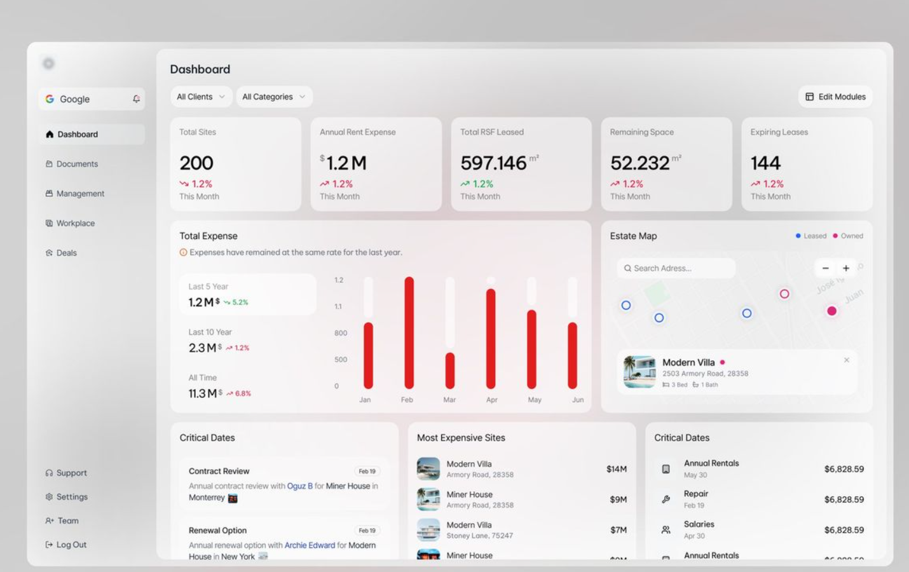
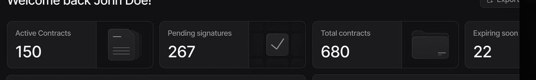
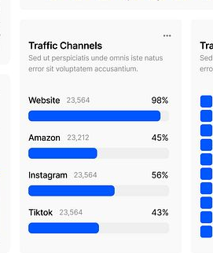
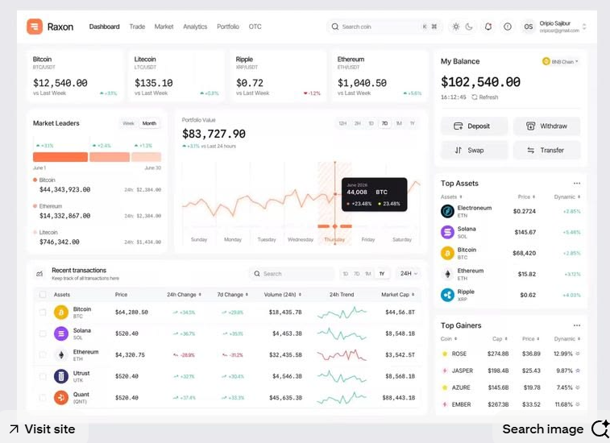

Blocks Lab
Ten blocks from the references, rebuilt from scratch so they can be judged side by side with the
screenshot that inspired them. Nothing here touches styles.css — this file carries
its own tokens, borrowed from the references themselves, because copying a look accurately is the only
way to find out whether we actually want it.
Each one lists the system: the handful of decisions that make it work, which is the part worth
keeping. A block graduates by being rebuilt on our --po-* tokens in styles.css
and written up in design.html — never by being pasted out of here.
1 · Metric card with a delta chip
Reference: banking dashboard — Total Balance / Total Expenses / Total Savings
Reference


The system
- Three tiers, one per line. Label 13px muted → value 28px bold → context row 12px. Roughly 2:1 between label and value, which is the whole hierarchy; you read it top to bottom and never have to hunt for the number.
- The card is the grey one. Page
#FFFFFF, card#FAFAFA, and the gutter between cards stays white — no shadow at all. The separation is one step of tone plus the gap. Worth knowing before we copy it: at that contrast the card edge is almost invisible in a bright room, which is exactly why our own surfaces carry a line. - The delta is a chip, not coloured text. A pill (tint ~
#EFF6FE, text at full) survives being small in a way coloured text does not, and it separates "how it changed" from "what it is". Note how faint the tint is — this is a wash, not a badge. - But the chip is blue in both directions.
+3.2% ↑and−4.2% ↓are the same hue in the reference; only the sign and the arrow carry the meaning. That is the one thing here not to copy — a POS cashier reading a red-to-black day needs the colour to do the work. Green/red is our change, made knowingly. - The chip is smaller than the sentence next to it — ~10px against 12px. It reads as an annotation on the number, not as a peer of "From last month".
- The comparison is spelled out — "From last month". Our own
↓100.0%with a tooltip is the same information hidden; this costs one muted line and removes the question. - "View More" is pushed right with
margin-left:auto, so the card has a left cluster (the facts) and a right anchor (the exit). No centre. - The top-right slot is a currency picker (flag +
USD+ chevron), not decoration, and only the first card has one — the control sits on the card it governs.
2 · Compact analytics tile
Reference: Shopify Analytics — and your note that these are too small
Reference

Recreation — theirs, then fixed
The system — and why you were right
- The value is exactly the same size as the label — both measure ~13px in the same #303030, so the tile has no focal point at all and four of them across a page read as a paragraph of small print. The second row changes exactly one thing — value to 22px — and the tile starts working.
- The dotted underline on the label is a real idea worth stealing. It is the standard "this term has a definition" affordance; hovering explains what Gross sales counts. Useful in a POS, where "gross sales" and "net sales" get argued about. In the reference it is a 2px dashed rule, ~4px under the baseline, in a very light grey.
- The em dash is a deliberate no-data marker, not a bug. Better than
0%, which claims a real comparison that does not exist. We should use it: an em dash where there is nothing to compare against. - The flat sparkline at zero still draws a line. A chart with no data should still show its axis — an empty box reads as broken, a flat line reads as quiet.
- This is the one reference in the set with a visible border: 1px #E3E3E3, a darker bottom edge and only a whisper of shadow, on a #F1F1F1 canvas. Worth knowing before block 1's "borderless card" gets treated as universal — Shopify draws the edge, everyone else here uses shadow alone.
3 · Big KPI with a trend sentence
Reference: KPIs Dashboard — Net Revenue / Day Sales / Weekly Sales / Monthly Purchases
Reference

Recreation
The system
- Grey cards on a white page —
#F9F9F9tiles, white canvas, white gutter, no border and no shadow. The opposite of the usual white-card-on-grey, and the opposite of how this block was first drawn. It only works because the cards sit in a run: four grey rectangles in a row read as a group, one alone would read as disabled. - The trend is a sentence, and only the percentage is coloured. "↑5% in the last week" — but the rest of the sentence is the same near-black as the label, not a muted tail, and it is not bold either. The colour is the only thing doing any emphasising.
- All four deltas are green, including the 0.2% one. The reference never shows the down state, so it tells us nothing about how red would behave here — worth remembering before we assume this palette survives a bad day.
- Label and trend are the same size (~13px) and the same colour; the value at ~27px is the only thing that changes. One size step, done twice, is the entire type system on this card.
- Tight tracking on the big number (
letter-spacing:-.02em) and a medium weight, not a bold — at 27px, 550 keeps it from shouting. Default spacing at that size looks loose; this is the single cheapest thing that makes a number look designed. - The ··· is always visible, on every card. Four menu buttons across a row, at a solid grey — furniture competing with the numbers. Ours should fade it in on hover instead; that is our change, not theirs.
- Generous bottom padding (~20px against 16 on the sides) leaves the trend sentence sitting well clear of the card edge, which is what stops the tile feeling cramped despite carrying three lines.
4 · Stat card with a raised unit
Reference: property dashboard — Total Sites / Annual Rent Expense / Total RSF Leased
Reference

Recreation
The system
- The unit is demoted and raised, never lowered.
₱small before the number,pcsmall after it — and both sit level with the top of the digits, the way$1.2 Mand597.146 m²do in the reference. The digits keep the baseline to themselves, which is what lets five cards line up. - A magnitude letter is not a unit. The
Min "1.2 M" is full size, spaced off the digits; only₱andm²/pcshrink. Shrinking the M would cost you the one thing you must not misread. - Diagonal arrows, not vertical ones. ↗ and ↘ read as a trend line; ↑ and ↓ read as a rank change. Small difference, and it is why these feel like analytics.
- The period is its own muted line under the delta, not a tooltip. Same lesson as block 1: one cheap line kills the "compared to what?" question.
- Five across, and the air is the whole trick. Measured they are 208 × 146 — roomier than they look: 16px sides, 18px top, ~17px of space above the number and ~16px below it. Cramming the same four lines into 110px is what makes a stat strip look like a spreadsheet.
5 · Dark card with a ghost icon
Reference: contracts dashboard — Active Contracts / Pending signatures
Reference

Recreation
The system
- The card is split in two, and the icon half is not filled. Roughly 60/40: the text panel
is lifted to
#1B1B1D, the icon panel is left at the page colour#111113, and a single#242426line divides them. Two panels, one fill — the split is made by lightening the half that carries the words, not by tinting the half that carries the decoration. - The icon is decoration and is styled like it. Oversized (38–54px across the four cards),
centred in the dark half, drawn at roughly
#26272B— about 8% white on that ground. No tile, no chip, no container. An icon at full contrast beside a number is two things asking to be read. - Each card carries its own 1px
#242426border and an 8px radius, with a real ~10px gap of page colour between cards. The divider is the same line colour as the border, so the split reads as part of the card's frame rather than as a second element. - On dark, the number is pure
#FFFFFF— sampled straight off the reference — against a#ADADB2label at 13px. The contrast between the two is what does the work; softening the white as well would flatten the pair. (The usual "pure white vibrates" advice is about white body text, not a 29px number.) - Relevant to us as the POS side's pattern — the dark till, not the back office. The back office stays light.
6 · Ranked bars
Reference: Traffic Channels
Reference

Recreation
The system
- Two numbers per row, at opposite ends, doing different jobs. The raw amount sits next to the name as small muted text (detail, read on demand); the percent is right-aligned and bold (the thing you scan). Putting both on the right would make a wall of digits.
- The bar is under the text, full width — not a mini bar in a column, and nothing sits on top of it. Full width means the eye compares bar lengths down the card without needing the numbers at all, which is the entire point of a bar.
- The track is always drawn (
--track, ~#EEF0F4). The empty part of the bar is what gives the filled part a scale. A bare fill floating on white is unreadable. - The bar is as tall as the label is big — measured off the reference it is ~12px of track under a ~13px name. Fully rounded ends on both track and fill. Thick plus rounded is what stops a short bar looking like a rendering glitch; the 9px version we first drew read as a hairline rule, not a quantity.
- The reference is NOT sorted — it runs Website 98%, Amazon 45%, Instagram 56%, Tiktok 43%, so the 56% bar sits below the 45% one. The rows here keep that order so the two panes stay comparable, but it is a bug in the reference, not a pattern to copy: if a card is called "top", an unsorted list makes the ranking a lie and forces the reader to sort four percentages by eye.
7 · Icon list
Reference: Revenue — product rows with amount and reference id
Reference
Recreation
The system
- Two stacked columns, mirrored. Left: name over timestamp. Right: amount over reference id. The strong thing is on top in both, the weak thing underneath in both — so the row scans as two lines, not four fields.
- This is the honest exception to our "one row, one line" rule, and it is worth naming why: here the second line is a different kind of fact (when / which receipt) rather than more of the same. When the sub-line is just a qualifier on the name — a SKU, a reorder point — it belongs beside it. Compare block 1 of
design.html. - The icon tile is a 30px circle in one pale blue tint — the same tint on every row. Only the glyph changes (card sale vs completed). The tint is the list's colour, not the row's; colouring rows by status would turn a quiet list into a status board, which is a different component.
- The row is 46px, and the tile sets it. 30px circle plus 8px above and below, name and timestamp stacked tight inside it. That is dense enough to show five sales without scrolling and still leave the tile room to be round.
- Amounts are tabular and right-aligned; so are the ids, which makes the right edge a clean line even though the two columns are different lengths. Long names truncate with an ellipsis rather than wrapping — the row height never changes.
- Hairlines between rows, none after the last — a trailing rule makes the card look cut off.
8 · Radial summary
Reference: Accounts summary — concentric arcs with a value legend
Reference

Recreation
The system
- One hue, three depths, lightest at the centre. The ramp runs light → mid → dark going outward:
#5CB2F0on the inner ring,#0C8CE9in the middle,#0963A4on the rim. Because the rings are nested rather than side by side, three different hues would imply they are unrelated; one hue says "three parts of the same total". - Legend order is ring order, inner to outer. In the reference the biggest figure takes the innermost ring — which is also the shortest circumference, so the largest number gets the least ink. Reproduced here because it is what the reference does, but it is the one thing we would flip if this graduates.
- All three arcs start at the right foot and sweep counter-clockwise — right, over the top, toward the left. Not left-to-right. Every ring shares the start, which is the only reason the three lengths are comparable at a glance.
- Square ends, not rounded. The reference's caps are butt on both ends and the feet stop dead on the baseline. A round cap would hang half a stroke below the baseline and add ~4° of ink to each end — on the smallest ring that is a visible lie about the value.
- One track tint for all three rings —
#E8F4FDat every radius, not a tint per ring. Same principle as the bar track: the ring is only readable because you can see the part it did not fill. - The legend carries the numbers, the chart carries the shape. No labels on the arcs, no percentages, and no centre label — the reference leaves the hole empty. The chart answers "roughly how do these compare"; the legend answers "exactly what are they". It is inset to the chart's own width, with no rules between rows.
- It is plain SVG: a half-circle
pathper ring, drawn twice — once as the track, once as the value withstroke-dasharray. Because each path already starts where its fill starts, there is nostroke-dashoffsetand norotate(). No chart library, no JS. - Honest caveat: the reference's arcs are not proportional to its own figures — Savings ($11,634) draws a shorter arc than Expenses ($9,834), so each ring must be a share of its own target rather than of a common total. The fractions here are copied for shape only; real ratios go in before this ships. And a ring is a poor way to compare three numbers precisely — it earns its place as a summary above a list that gives the real figures, never as the only view.
9 · Ticker cards
Reference: Raxon crypto dashboard — the row of price cards along the top
Reference

Recreation
The system
- The price is set in a monospace face, ~22px at a medium weight — not a heavy proportional number. That single choice is what makes the strip read as a price feed: the decimal points line up across four cards, and a price that ticks does not reflow the card. Bold sans would have been louder and less legible.
- Name and code stacked, code tiny and tracked out. The code is for confirming, not reading, so it gets 10.5px and
letter-spacing:.04em— the standard treatment for an identifier. - The comparison basis is printed on every card ("vs Last Week"), left, muted; the delta is right, bold, coloured. Same split as block 6: label left, number right.
- The delta is not a chip — no pill, no tinted background. Just a solid ▲/▼ caret and coloured 10.5px text, smaller than the price by a long way. A pill on every card would put three coloured blobs in a row and outshout the prices they annotate; block 1 can afford a chip because there is one of it.
- No sparkline on these cards, deliberately. The reference puts its charts in the panels below and keeps the top strip to one number each. A 40px sparkline here would add a shape nobody can read at that width and cost the price its room.
- Directly relevant to us: this is the shape of a supplier price watch — our Price history page is a table of exactly this data and would read far better as a strip of these above the table.
- These stay small on purpose because there are many of them. Small is fine when the card is one fact; block 2 failed because a small card tried to hold four.
10 · Table with a sparkline column
Reference: Raxon — Recent transactions table
Reference
Recreation
| Item | Price | 7d change | Units (7d) | 7d trend | Revenue |
|---|---|---|---|---|---|
CE
Cement CEM-40KG |
₱285.00 | ↗ +34.3% | 1,284 | ₱365,940 | |
RB
Rebar 10mm RB-10-6M |
₱135.10 | ↗ +36.7% | 903 | ₱121,995 | |
PL
Plywood 1/4" PLY-025 |
₱740.00 | ↘ −28.9% | 142 | ₱105,080 |
The system
- The header is a filled band, not a row of labels. A
#F7F8FAstrip with an ~8px radius, inset from the card edge, sitting on a pure-white card. It separates the header from the body by weight instead of by a line, which is what lets the body go completely unruled. - No rules at all in the body. Sampled every empty column between the rows of the reference and there is not one pixel darker than the card — the rows are held apart by the header band above and by row rhythm alone (~34px pitch against 12.5px text). A table only needs rules when nothing else is doing the separating.
- Alignment is mixed, and deliberately so. Item and price are left, both percent columns
and the sparkline are centred, and only the two large money columns are right-aligned on their last
digit. Right-aligning everything is the reflex and it is wrong here: right-alignment buys you
comparable digit columns, which short fixed-width values like
+34.3%do not need and a unit price does not get. - The sparkline is a column, not a decoration. Same 78×20 box in every row, centred under its header, ~19 points, 1.5px, no axis and no labels. It is dense on purpose — six points reads as a chart that has been shrunk; twenty reads as a texture. It answers "what shape got us here", the question a percentage cannot answer.
- The line is coloured by direction and matches the percent in the same row, so the two agree at a glance. A sparkline in a neutral grey next to a red number makes you check twice.
- Two-letter monogram instead of a logo, with the code underneath as a second line. Coloured circle, 22px, initials — roughly two thirds of the row height in the reference. We have no product images and are not going to; this is the cheap honest substitute and it makes a list of text rows scannable.
What they all share
Ten blocks from six different products, and the same eight decisions keep turning up. This is the part actually worth taking — the specific pixel values above are a costume, these are the pattern.
1 · One number per card, and it is unmistakably the biggest thing
- Value is 2× to 3× the label. The Shopify tile is the only one that breaks this and it is the only one that looks weak — which is what you spotted straight away.
- Tight negative tracking on anything over 24px. Costs nothing, and its absence is what makes a number look like default browser output.
2 · The comparison is always spelled out
- "From last month", "in the last week", "vs Last Week", "This Month" — every single reference prints the basis. None of them hides it in a tooltip, which is what we currently do.
- An em dash where there is no comparison. Not
0%, not↓100%. This is the fix for our empty-day Overview and it does not need the red-vs-grey argument settled first.
3 · Colour is a chip or a word, never a row
- Tinted pill at ~8% background with full-strength text, or a single bold coloured number inside an otherwise muted sentence. Nothing colours a whole row or a whole card.
4 · Label left, number right — everywhere
- Bars, legends, list rows, ticker footers, table columns. The right edge becomes a single clean line of tabular figures you can read down without your eye tracking back.
5 · Every bar and ring draws its own remainder
- The track is what gives the fill a scale. A fill with no track is a coloured rectangle of unknown meaning.
6 · Furniture recedes or hides
- Icons at low contrast, oversized, decorative. ··· menus on hover only. Borders replaced by gaps and shadows. In every one of these, the chrome is quieter than the content — which is not true of our tables today.
7 · Two stacked lines are allowed when the second is a different kind of fact
- Name over timestamp, amount over receipt id: fine, because the pair reads as one unit. Name over SKU: not fine, because the SKU is a qualifier on the name and belongs beside it. Our rule stands, and now it has a stated boundary.
8 · No chart library anywhere in this file
- Sparklines are a
<path>. Rings are two arcs and astroke-dasharray. Bars are two divs. Everything on this page is hand-drawn SVG and CSS, which means every one of these could ship in our no-build-step app exactly as it is.
What I would take first
- The em dash and the printed comparison basis — smallest change, biggest honesty win, fixes the Overview card on a quiet day.
- Ranked bars — we have no block for "share of total" and three pages need one.
- Ticker cards on Price history — that page is currently a table of a thing that wants to be a strip.
- ··· on hover and the gap-as-separator trick — both are pure subtraction.
None of this is adopted yet. Say which ones you want and they get rebuilt on
--po-* in styles.css and written into design.html.